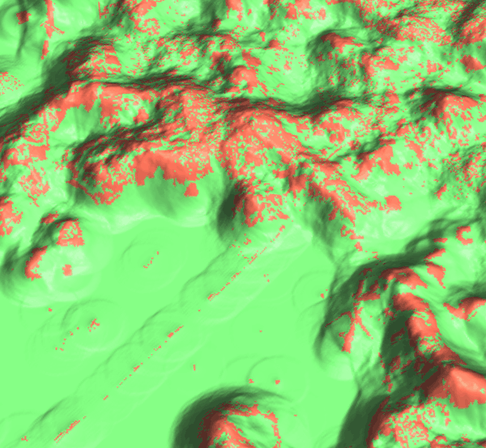

$O_{ij}^{t}$ is the state of cells in its neighborhood
$R$ represents transition rules
note that $\Delta t$ is small
Game of life
Developed by Conway in 1970, the game has the following simple rules:
Any live cell with fewer than two live neighbours dies, as if by underpopulation.
Any live cell with two or three live neighbours lives on to the next generation.
Any live cell with more than three live neighbours dies, as if by overpopulation.
Any dead cell with exactly three live neighbours becomes a live cell, as if by reproduction.
The resulting pattern is dependent only on the initial configuration:
example of emergence and self-organization leading to many
surprising evolution patterns
Game of life examples
Game of life in wikipedia: from simple
still lifes and oscilators to complex and surprising evolution (e.g. play puffer-type breeder)
Interactions and spread beyond the immediate neighborhood
FUTURES
(Meentemeyer et al., 2013)
urban growth model
patch-based
stochastic
accounts for location, quantity, pattern of change
positive feedbacks (new development attracts more development)
allows spatial non-stationarity
FUTURES output
turning green cells into orange cells
The numbers represent the year when the cell was developed since the start of simulation:
-1: undeveloped, 0: initial development, 1: developed in the first year, …
Modeling framework
Demand submodel
estimates the rate of per capita land consumption for
each subregion
extrapolates between historical changes in population and land conversion
inputs are historical landuse, population data, population projection
Demand scenarios
$$
y = Ae^{BX} \\
y = A + Bx \\
y = A + B ln(x) \\
y = A + B ln(x - C) \\
y = (1 - e^{-A(x - B)}) + C
$$
Demand: population decline
demand submodel designed for regions with population growth
FUTURES doesn't simulate cell de-conversion: here it would simulate zero new cell conversions
even with population decline, impervious areas can increase
Potential submodel
multilevel logistic regression for development suitability
accounts for variation among subregions (for example policies
in different counties)
inputs are uncorrelated predictors (distance to roads and development, slope, ...)

surface: potential, orange: developed areas, green: undeveloped areas
Potential submodel
$$
p_i = \frac{e^{s_i}}{1 + e^{s_i}}
$$
$p_i$ is development probability for cell $i$
$s_i$ is development potential for cell $i$
$$
s_i = a_{j,i} + \sum_{h=1}^{n} \beta_{j, i, h} \, x_{i, h}
$$
$j$ is the level (e.g. counties),
$h$ is a predictor,
$n$ is the number of predictor variables,
$a_{j,i}$ is intercept,
$\beta_{j, i, h}$ is regression coefficient,
$x_{i, h}$ is the value of $h$ at $i$
Potential submodel: workflow
stratified random sampling of predictors and response variable (developed/undeveloped raster)
multilevel logistic regression to relate cell suitability factors (predictors)
to the probability of a cell becoming developed for each subregion:
glm(developed ~ (1|subregion) + distance_to_water + development_pressure + road_density + ...)
automatic model selection is based on Akaike information criterion (AIC)
development probability surface from regression coefficients
Potential submodel: notes
predictors and coefficients do not change during simulation, except for development pressure
avoid multicollinearity
Development pressure
Predictor based on number of neighboring developed cells within search distance, weighted by distance.
Allows for a feedback between predicted change and change in subsequent steps.
$$pressure = \sum^{n_i}_{k=1} \frac{state_k} {d^{\gamma}_{ik}}$$
where $state_k$ indicates whether $k$th neighboring cell is 1 or 0 (developed or undeveloped)
$d_{ik}$ is distance between current cell $i$ and neighboring cell $k$
and $\gamma$ controls the influence of distance between neighboring cells
Development pressure
Surface represents the development pressure, color is the initial development
Patch Growing Algorithm
stochastic algorithm
converts land in discrete patches
inputs are patch characteristics (distribution of patch sizes and compactness)
derived from historical data
Patch Growing Algorithm
pick randomly a seed cell $i$
seed is established if $p_i$ > random number
randomly pick patch size
grow patch
add neighbors to a list and sort it based on $p_i / d^c$, where $d$ is distance from $i$ and $c$ is compactness value
pick first neighboring cell and try to add it to the patch if $p_i$ > random number
if added, add surrounding neighboring cells to the list
repeat until the patch size is met
recompute development pressure
Patch Compactness
Low
High
Scenarios: Incentive power
Scenarios
Constraint parameter: zones with decreased probability of development
$$P_{new} = P . C, \quad C \in \langle 0, 1\rangle $$
Stimulus parameter: zones with increased probability of development
$$P_{new} = P + S - P.S, \quad S \in \langle 0, 1 \rangle$$
r.futures
Information flow diagram for the set of modules implementing FUTURES